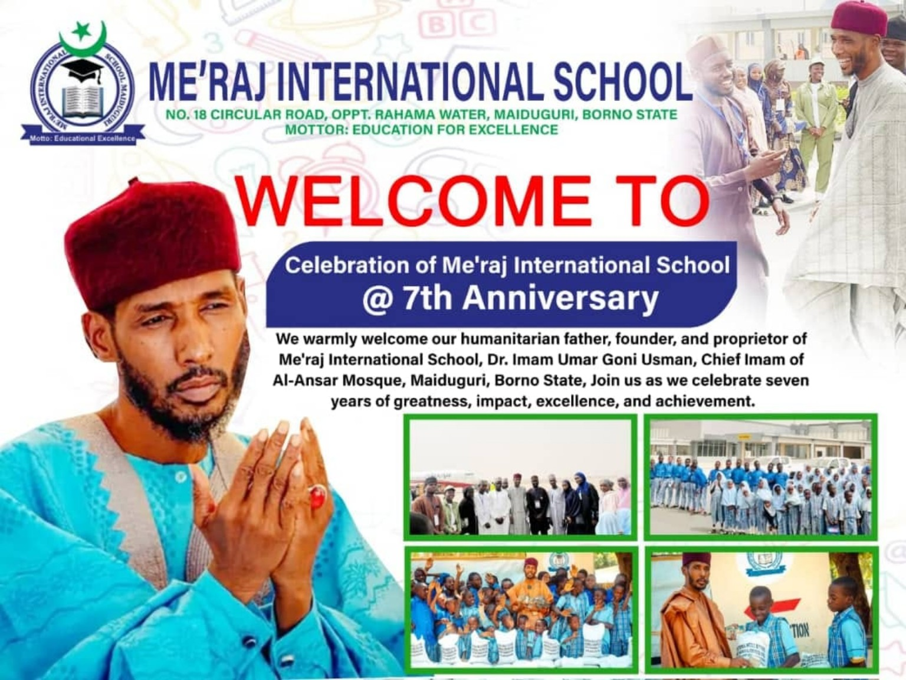

Nursery
A nurturing foundation where young learners develop curiosity, confidence and positive habits.
Quality, balanced and purposeful education that develops learners academically, morally, spiritually and socially.

Me’raj International School Maiduguri is committed to providing quality, balanced and purposeful education for children and young learners.
Our approach combines Western Education with Islamic Studies and Arabic Language, enabling learners to develop intellectually, morally, spiritually and socially.
To become a leading educational institution that produces academically excellent, morally upright, confident and responsible future leaders.
To provide quality and comprehensive education through effective teaching, modern learning approaches, Islamic values and character development in a safe and supportive school environment.
A nurturing foundation where young learners develop curiosity, confidence and positive habits.
A balanced learning journey focused on strong foundations, character and practical skills.
Preparing students for further education, responsible citizenship and future careers.
English Language, Mathematics, Basic Science, Computer Studies, Agricultural Science, C.C.A., History, Religion and National Values, Home Economics and Handwriting.
Qur’an, Hadith, Fiqh, Tawheed and Islamic Religious Studies, with emphasis on worship, manners and good character.
Arabic Language and Mutalaa (Arabic Reading and Comprehension), building reading, writing, vocabulary and comprehension.
Send an admission enquiry and the school can follow up with you.
Enquire on WhatsAppAddress
No. 18 Circular Road, GRA, Maiduguri, Borno State, Nigeria
Phone
08026798386 / 08038978383
School
Me’raj International School Maiduguri